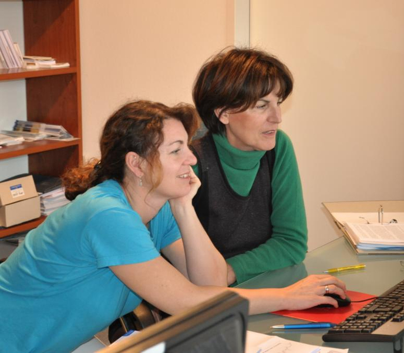

Einladung zum "Frühstück mit Strahlen" am Mittwoch, den 10. Oktober 2012 7.00 Uhr
Dr. Thomas Görlitz, Oberarzt der radiologischen Abteilung des Klinikums Konstanz, referiert zum Thema: "Vom...
Unsere Praxis ist seit über 35 Jahren in Konstanz am Bodensee Ihr Ansprechpartner zu allen Fragen der Radiologie und Krebsbehandlung (Onkologie). Für unsere zuweisenden ärzte und deren Patienten bieten wir Leistungen der diagnostischen Radiologie, Strahlentherapie, und Nuklearmedizin, kurz: Radiologie aus einer Hand.
Wir laden unsere ärztlichen Kollegen, unsere Patienten, und alle interessierten Personen dazu ein, unsere Praxis auf den folgenden Seiten kennen zu lernen. über unsere Großgeräte informieren wir sie z.B. hier: Tomotherapie, Kernspintomographie, und PET-CT.
Oder rufen Sie uns einfach an unter Tel. 07531- 813710. Für weitere Fragen steht unser Team gerne für Sie bereit. Terminwünsche oder allgemeine E-Mails können Sie an anmeldung(at)radiologen-konstanz.de adressieren. Für unsere ärzte finden Sie hier Kontaktformulare.
Dr. Thomas Görlitz, Oberarzt der radiologischen Abteilung des Klinikums Konstanz, referiert zum Thema: "Vom...
Thema: ein Jahr Kompetenzzentrum für Schilddrüsen- und Nebenschilddrüsenchirurgie (Veranstalter: Klinikum Konstanz /...
 ISO-9001-Zertifikat erneuert.
Bedarfsplanung für Kassenärzte reformiert: kleine und große Planungsbereiche, über- und unterversorgende Arztgruppen
"Spiegel online" stellt seit heute zehn schöne Fälle vor, die auch für Nichtradiologen interessant sind
Hausärzte müssen nicht routinemässig alle unsere Befundberichte in Kopie erhalten - sondern nur die, die sie brauchen
Copyright © 2011 Gemeinschaftspraxis Prof. Dr. Hansjörg Zwicker und Partner.